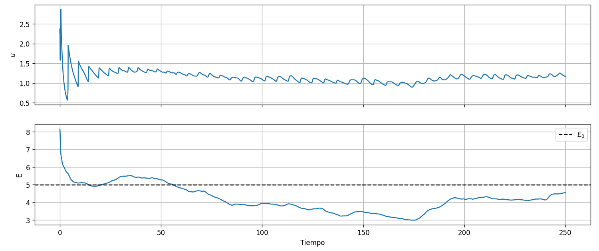
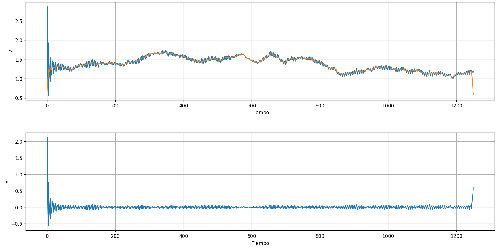
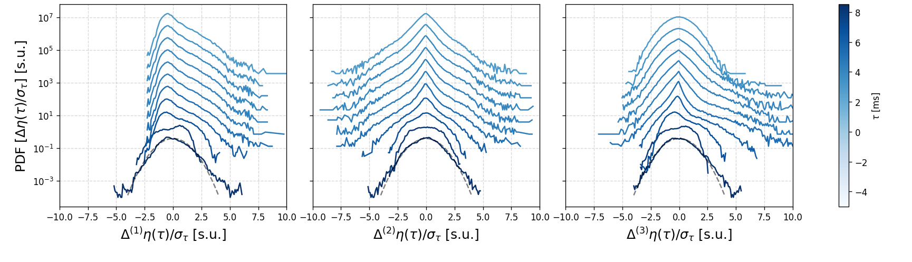
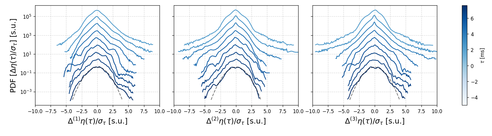
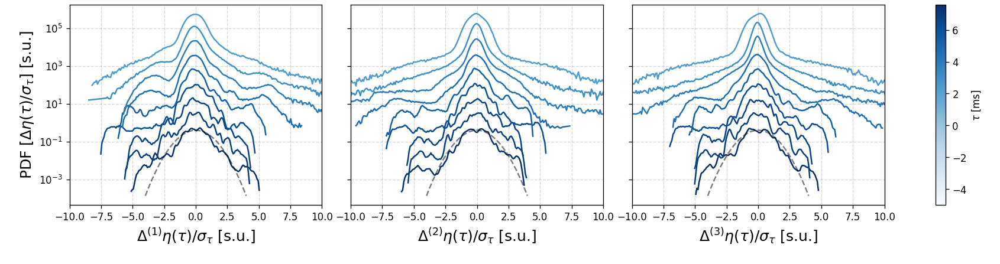
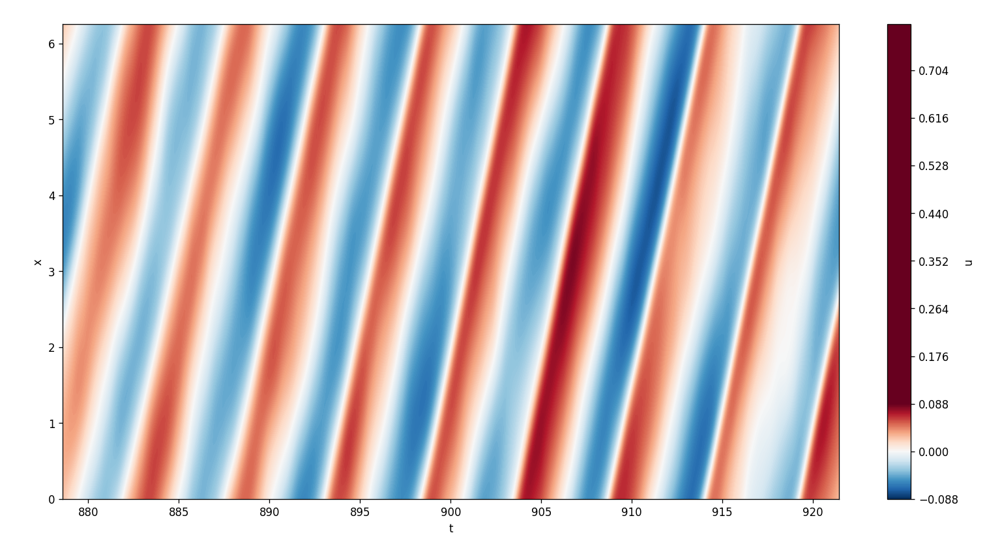
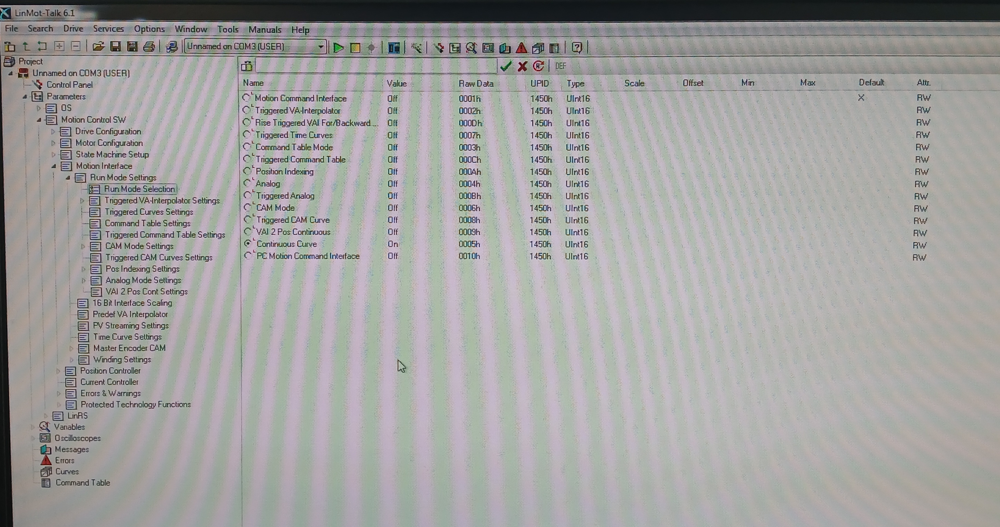
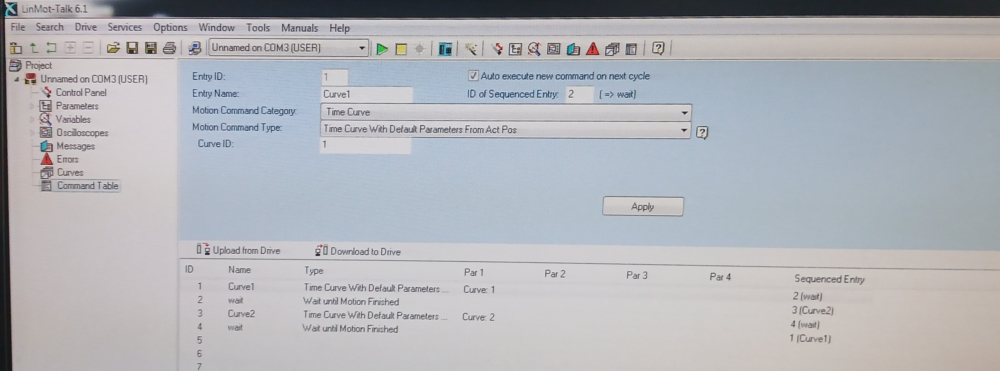

Journal Week 25
Table of Contents
Referencias
2026-06-16
[08:47]
Sigo con la solución numérica de la Ecuación de Burgers 1D con un forzado espaciotemporal.
[08:55]
Que primero avence por delante el salto o la cola de la onda de choque depende del valor de medio de \(u\). Si es negativo se mueve hacia a la izquierda en cualquier caso y si es positivo hacia la derecha, ya que la velocidad a la que se propaga la onda de choque es proporcional a \(u\).
[09:20]
Siento que lo que mejor funciona para evitar que explote la energía pero poder tener muchas ondas de choque, es empezar con un \(E_i > 0\) y un forzado muy pequeño.

[09:35]
Paraa una señal más larga funciona bastante mejor el tema de la media móvil.

[09:55]
Y finalmente aquí están las PDFs de los incrementos:

Lo que parece estar pasando es que hacen falta tiempos $τ$s muchos más largos para que se vuelvan Gaussianas.
[10:07]
Seguramente esto tenga que ver con el tiempo de correlación del forzado de Ornstein-Uhlenbeck. En este caso elegí $τ=$2.5, lo cual es coherente con que tome un delay de ese orden para que las PDFs se vuelvan gaussianas.
[10:15]
Efectivamente, para el forzado tan lento del experimento el tiempo de correlación es bastante más grande. Corrigiendo eso:

Eso para una ventana de 5 s de la serie temporal.
[10:21]
Y esto para una ventana de 15 s, ya a partir de 10 s empiezan a dar más raras, lo que supongo será por el forzado de 15 s.

[10:38]
Ideas:
- Para estudiar cómo se va deformando la onda a medida que avanza por la surf zone, se pueden usar wavelets con onda triangular, o separar por ondas individuales como en (Power et al. 2015).
- Para medir la relación de dispersión:
- Usar unos 5 sensores por tramos del canal.
- Usar un láser verde que ilumine agua teñida con rodamina para que emita en el rojo y utilizar la cámara para medir la superficie libre con un filtro.
- FTP por tramos.
- Para agregar aleatoriedad al forzado meter ruido en la señal del motor. Y variar levemente el tiempo de subida del flanco delantero.
- Evaluar qué pasa después del csch² numéricamente al cambiar el esquema de integración temporal.
[14:26]
Este es el diagrama espaciotemporal de la última simulación:

2026-06-17
[09:47]
TekVisa hace cosas con los drivers del puerto com en la Compu de la sala y después LinMot Talk no lo encuentra. Desde Cmd R en msconfig destildamos en ejecución al inicio los servicios de TekVisa. Hay que correr manualmente Tektronix VISA Resource Manager cuando se quiera utilizar.
[10:33]
Logré configurar el Command Table para alternar entre 2 curvas. Para poder hacer esto:
- Cargar las curvas deseadas en la memoria del drive del motor. Para esto hay que subirlas a LinMot Talk en la sección de
Curvesde la izquierda como se hace usualmente, con el cuidado de ir cambiando elCurve IDenCurve Properties. - En
Run Mode Selectionque se encuentra en el árbol de la izquierda hay que seleccionarCommand Table Mode, por defecto está puesto enContinuous Curve.

- Hay que cargar en la sección de
Command Tablede la izquierda los comandos para seleccionar las curvas:

Por ejemplo para alternar entre la curva con ID=1 y la curva con ID=2 e ir ciclando entre ellas se puede utilizar:
| Entry ID | Entry Name | Motion Command Category | Motion Command Type | Curve ID | Auto Execute new command on next cycle | ID of Sequenced Entry |
|---|---|---|---|---|---|---|
| 1 | Curve1 | Time Curve | Time Curve With Default Parameters From Act Pos | 1 | True | 2 |
| 2 | wait | Conditions | Wait until Motion Finished | - | True | 3 |
| 3 | Curve2 | Time Curve | Time Curve With Default Parameters From Act Pos | 2 | True | 4 |
| 4 | wait | Conditions | Wait until Motion Finished | - | True | 1 |
Esto elige la curva, la ejecuta, espera que termine la ejecución y pasa a correr la siguiente. El auto execute funciona un poco al estilo de las animaciones de PowerPoint, donde se configura para que la siguiente se corra al finalizar la anterior, y se dirige la última a la primera para que sea periódico.
- En
Control Panelcomo se hace usualmente se prende el firmware del motor:- Se usa
Switch On(la primera casilla marcada y la segunda se desmarca y se marca). - Se hace el
homing. Se marca la primera y segunda casilla, esto hace elhoming. - Se desmarca la segunda casilla del
homingpara habilitar el envío de comandos mediante laCommand Table.
- Se usa
- En el panel de abajo a la izquierda se configura la instrucción a enviar:

Para esto se elige como comando Start Command Table Command (200xh) y en Ccommand Table Entry ID se elige la Scaled Value = 1 para que empiece desde el principio. Hay que tildar el Enable Manual Override y Auto Increment Count Nibble.
- Presionar el botón de
Send Commandy se va a empezar a ejecutar. En mi caso probé con dos senos de 100 mm de amplitud, uno rápido de 2 s de período y otro lento de 10 s de período para verificar el correcto funcionamiento.
Para más información está: Command Table Tutorial.
[11:04]
Para exportar la Command Table desde File: Export: Filename.lmc: Seleccionar Command Table. El archivo de salida es un .lmc. La idea ahora sería analizar ese archivo para poder escribir un código de Python que programáticamente arme otro .lmc que alternaría entre 10 Curves IDs aleatoriamente. La Command Table tiene hasta 255 líneas, con lo cual, al cada curva necesitar una para cargarla y otra para esperar a que termine, podríamos tener una 122 curvas, que si cada una dura unos 10 s serían unos 20 minutos de medición.
[11:45]
Sobre el filtro de agua destilada:
- Cuando está en
Sípasa el agua del tanque azul al de arriba, y al terminar empieza a hacer el sonido declick click clickya que deja de tener agua para mover. - Hay que tener cuidado ya que el flotante del tanque de arriba está desconectado y puede rebalsarse.
- Al estar en
Nollena el tanque azul y se corta al llenarse. - Para que se llene el tanque de abajo hay que abrir la llave de abajo de la pileta. Abrirla poco por las dudas.
[11:47]
Sobre el archivo de configuración del Command Table: Pareciera ser una sucesión de bloques de corchetes [...] al estilo de JSON donde se guarda cada una de las 255 líneas de la tabla. En este caso hay solo 4 líneas llenas y 251 líneas vacías.
[14:12]
Una línea con comando es: [A #1 42753 'Curve1' 4 1 [A 1 0 0 0 0 0 0 0 0 0 0 0 0 0 0 0 ] 2 ]
Donde:
- La
Aestá siempre. - El
#1o#0hablan de si esa línea está siendo usada. - El
42753está siempre. "Curve1"es el nombre del comando.4es la orden o comando. Para nosotros las relevantes son:- 4: ejecutar curva.
- 33: esperar a terminar el movimiento.
- El
1está siempre. - El primer número del array da el
Curve IDa ejecutar, parawaites 0. - El
2da la siguiente entrada de lacommand tablea ejecutar.
[14:38]
Ya está funcionando el generador de curvas aleatorias. Se pueden elegir para poner hasta 127 curvas. Ahora quedaría generar las curvas en sí.